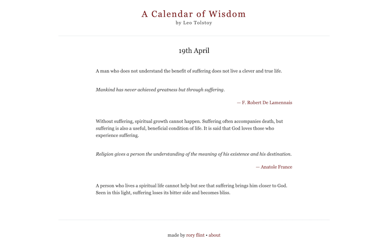

A NextJS app that displays the daily wisdom, quotes and philosophy from Leo Tolstoy's A Calendar of Wisdom. The content was dynamically
parsed from an ePub file to create formatted Markdown.

A Calendar of Wisdom by Leo Tolstoy was published in the early 20th century and is one of my all time favourite books. For each day of the year he compiled quotes, personal wisdom and Philosophy to inspire, motivate and contemplate. As life became more and more busy, I often forgot to read the daily entry and so I have parsed the text and created a simple React site to display the relevant text each day.
The most difficult element was taking an ePub document, cleaning out the unwanted text and then writing a Python script to dynamically extract each day and format it correctly; differentiating between titles, quotes and standard text. Once the Markdown had been created, it was a simple case of creating a fast, modern and efficient UI to display the text.
The project was written in TypeScript and styled in Tailwind. At point of deployment, it scored 100 across all Lighthouse metrics.